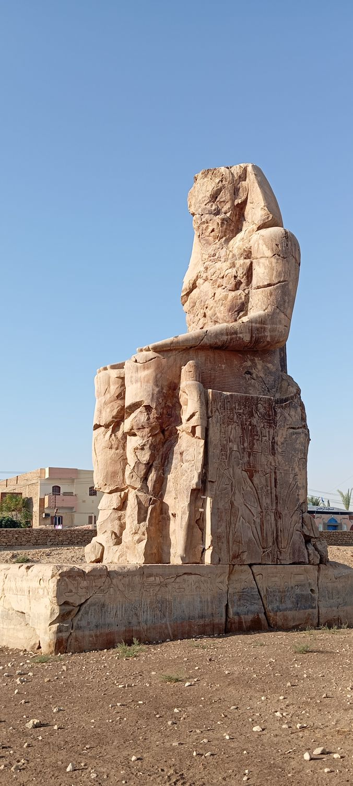

Two giant seated statues of Amenhotep III stand alone among the fields of the west bank. They once guarded the gate of his huge temple, which an earthquake destroyed and later kings quarried away; only the colossi survived. In Roman times one of them was said to sing at dawn, and Greek visitors named it after Memnon, a hero of the Trojan War.
Probably the southern colossus, with one of the queens at the king's leg; behind it, statues raised again by the conservation project. Our photo, 23 Nov 2026.
The statues
Two kings in stone
Who
Amenhotep III, enthroned, with his wife Tiye and his mother Mutemwia
Size
About 18 m high with the plinths; some 700–800 tonnes each
Stone
Quartzite from Gebel el-Ahmar near Cairo, each statue a single block, brought upriver on barges
Where
West bank of Luxor, by the road to the Valley of the Kings
The temple
A vanished giant
Name
Temple of Millions of Years, now Kom el-Hettan
Built
First half of the 14th century BC
Fate
Destroyed by an earthquake c. 1200 BC and quarried away
Today
The two colossi, foundations and re-erected statues
Reading a colossus
Both statues follow the same design. Stand in front, then walk round to see the sides and the back. Tap a number on the drawing.
Simplified front view, not to scale.
1
The lost double crown
Above the headcloth each king wore the double crown of Upper and Lower Egypt. Both are gone; a single piece is still in place on top of the southern statue.
2
Face and headcloth
The striped nemes headcloth frames a face that wind, sand and centuries have worn almost smooth. Each statue was hewn from a single block of quartzite.
3
Hands on the knees
The king sits upright, both hands flat on his knees: the calm, timeless pose of a god-king receiving offerings, the same at every scale.
4
The royal kilt
He wears the pleated royal kilt, the shendyt, with the head of a panther carved in bold relief on his lap.
5
Queen Tiye
Against the throne by his right leg, on your left, stands his great royal wife Tiye, the mother of Akhenaten. Tiny beside his legs, she is still several metres tall.
6
Queen Mutemwia
By his left leg stands the queen mother Mutemwia. Wife and mother together placed the king within his family, both under his protection.
7
The sides of the throne
Walk round to the sides: two fat-bellied Nile gods, Hapy, tie the papyrus of the north and the lily of the south round the hieroglyph for 'unite'. This sema-tawy scene shows the king holding the Two Lands together.
Each statue stands on a plinth of three huge blocks. On the back, columns of hieroglyphs record the dedication of these 'great statues brought from Northern Heliopolis to Southern Heliopolis': from the quarry near Cairo to Thebes.
9
Visitors' graffiti
The legs and feet of the northern statue are covered with 107 inscriptions in Greek and Latin, left by visitors who came to hear it sing between about 24 BC and AD 205.
For two centuries the northern colossus was one of the great sights of the Roman world.

The northern colossus, the 'Memnon': its upper body is the Roman rebuilding in courses of blocks.A queen beside the king's leg and the carved side of the throne. Our photos.
Broken by an earthquake
An earthquake in Roman times, often dated to 27 BC, cracked the plinths and threw down the upper half of the northern statue. The southern one stayed whole, with cracks.
A voice at dawn
Soon visitors reported that the broken statue gave out a high, sharp sound at sunrise, perhaps as the stone warmed and dried after the cool night and the cracks expanded.
Memnon, son of Dawn
Greeks heard the cry of Memnon, the Ethiopian king killed by Achilles at Troy, greeting his mother Eos, the Dawn. The name stuck to both statues, though they show Amenhotep III.
An emperor's visit
In AD 130 the emperor Hadrian and his wife Sabina came to listen. The poet Julia Balbilla, travelling with them, carved her poems to Memnon on the left leg.
Pilgrims and soldiers
Prefects, soldiers stationed in the Thebaid, Roman officials and tourists left their names, the date and the hour they heard the voice, often 'at the first hour'.
Silenced
Around AD 200 the statue fell silent, probably after its upper part was rebuilt with courses of quartzite blocks from Gebel Tingar near Aswan. The work is usually credited to Septimius Severus, who visited in 199, but no inscription proves it.
The temple that vanished
The colossi stood in front of the first of three pylons; a long processional way led west to the sanctuaries where the gods of Thebes rested during the Beautiful Festival of the Valley.
Schematic plan, not to scale, after the information panels at the site.
The largest of its kind
The colossi guarded the gate of Amenhotep III's 'Temple of Millions of Years', the largest and richest royal temple ever built on the west bank, dedicated to 'his father Amun-Ra'.
An earthquake and a quarry
Around 1200 BC, early in Merneptah's reign, an earthquake brought down its pylons, columns and statues. Merneptah and later kings took the stones away for their own temples.
Flood, silt and dealers
The Nile flood covered the ruins with silt. In the 19th century, agents of antiquities dealers dug at Kom el-Hettan, 'the hill of sandstones', and shipped sphinxes, statues and heads to Alexandria and Europe.
Raised again
Since 1998 the Colossi of Memnon and Amenhotep III Temple Conservation Project has excavated the site, consolidated the colossi and set fallen statues back on their feet in the field behind them.
The colossi through time
c. 1390–1353 BC
Reign of Amenhotep III, at the height of Egypt's wealth and power.
c. 1360 BC
The two colossi, about 18 m high with their plinths and some 700–800 tonnes each, are brought by barge from the quartzite quarries of Gebel el-Ahmar near Cairo and set up before the First Pylon.
c. 1200 BC
An earthquake destroys the temple; its stones are quarried away.
27 BC
Another earthquake, according to the Greek geographer Strabo, breaks the northern colossus, which begins to 'sing' at dawn.
AD 130
Hadrian and Sabina hear the voice; Julia Balbilla carves her poems.
AD 199
Septimius Severus visits; soon after, the statue is rebuilt and falls silent.
19th century
Antiquities dealers ransack Kom el-Hettan.
1964–1970
Studies by the Egyptian antiquities service and the Swiss Institute for architectural research.
since 1998
The conservation project excavates the temple and re-erects its statues.
For our visit
A short stop
The colossi stand right by the road; a quarter of an hour is enough, on the way to or from the Valley of the Kings.
Walk round
The best carving is on the sides of the thrones, with the Nile gods, and on the queens at the legs.
Morning light
The statues face east, towards the river and the sunrise, so the morning sun lights their fronts.
Look behind
In the field beyond, the conservation project is still at work, with re-erected statues and fragments laid out by their plinths.
Part of the Private Alimaña Tour ↗. The drawings are schematic; dates are approximate. Facts from the site's information panels and standard references.